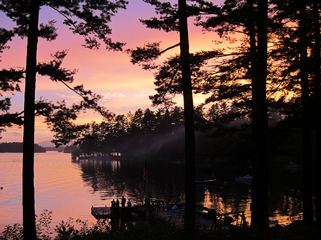

We've been together for a while, so we thought we'd give you a snapshot of what we were doing each year around
our wedding-day-to-be. All of these events happened within a few weeks of June 14th!
We met the first week of college and were close friends for two years. In 2005 we went to Thailand with
Stephanie's family (including sister/co-maid-of-honor Ashley), just as friends. Amazingly, the day
Adam arrived was June 14th.
After we came back,
Stephanie sent Adam an email professing her true feelings, then called him and told him to delete
it before he opened it. He actually did! She knew she had found a true sucker, so she sent it again,
let him read it, and thus began our journey together.
We lived in Menlo Park, California with our groomsmen Bill (below eating an entire watermelon) and Dave
and a few other friends.
We made our first of many trips to Lake Tahoe to visit aunt/bridesmaid Michelle and cousins
James and Matthew (below in the boat).
We graduated from Brown! We celebrated with co-maid-of-honor Cristi (below between Adam and Steph),
and groomsmen Dave (next to Cristi), DLev (far right in the other photo), and Bill (between Dave and Bill).
After graduation, Adam biked across Europe with groomsman Colin (red shirt)
and friends Burkie and Rick while Stephanie started work at Stanford.
Brother/co-best-man Dan got married to bridesmaid Shannon! Adam made a fantastic toast that raised the bar
for Dan.
We visited Yosemite National Park and got way too close to some bears.
Adam's mom Sue was diagnosed with terminal breast cancer in 2009. Many years ago, we took
trips to New Hampshire and Maine during the summers. Despite struggling with her cancer and
chemotherapy, Sue wanted to take a big family trip, so we drove up to Maine and spent
a week at the astonishingly beautiful Migis Lodge.

Just before Sue's last weeks, she had a reprieve of relative healthfulness and energy after
stopping chemotherapy. Incredibly, we were able to take one last family trip to some of our beloved
New Hampshire destinations, including an obligatory dinner at the Common Man.
And Adam got to attend co-best-man Dan Kirshenbaum's graduation from medical school!
Who could turn down a Groupon for half-off hang gliding lessons? Not us! After one lesson, we were hooked
and have been flying ever since.
(Just for kicks, here's some more recent coverage).
There's a dark joke in the flying community about Aviation Induced Divorce
Syndrome, or AIDS. But we must have had Aviation Induced Marriage Syndrome, because we got engaged
on May 5, 2013 after running the Vancouver Marathon together! Hooray!
And Dan and Shannon had baby Shane!
Hasn't happened yet. But hopefully we'll get married!